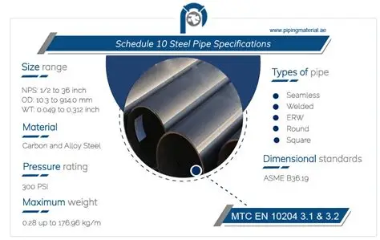
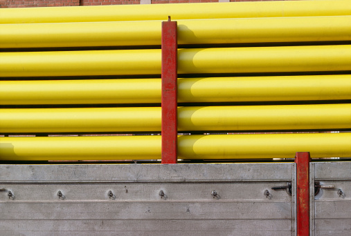
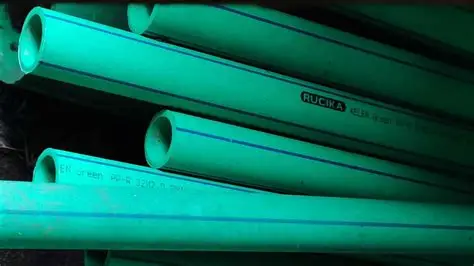
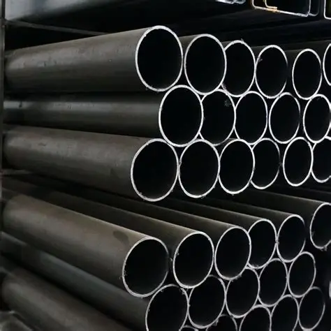

Pipe Schedule dan Macam-Macam Pewarnaan Pipa (Pipeline Color Coding)
Riyan Setiawan April 14, 2026
Pipe schedule adalah standar yang digunakan untuk menunjukkan ketebalan dinding pipa dalam sistem perpipaan. Angka schedule (misalnya Sch 10, Sch 40, Sch 80, hingga Sch 160) tidak menunjukkan ukuran diameter, tetapi menunjukkan ketebalan relatif pipa terhadap kekuatan tekanannya. Semakin besar angka schedule, semakin tebal dinding pipa tersebut, sehingga semakin mampu menahan tekanan tinggi. Konsep ini penting dalam desain sistem perpipaan karena pemilihan schRiyanle yang tepat akan menentukan keamanan, kekuatan, serta efisiensi sistem dalam jangka panjang.
“Almost everything will work again if you unplug it for a few minutes… including you.” — Anne Lamott
Fungsi Pipe Schedule
1. Menentukan Ketahanan Tekanan
Pipe schedule digunakan untuk memastikan pipa mampu menahan tekanan fluida yang mengalir di dalamnya. Pipa dengan schedule lebih tinggi memiliki dinding lebih tebal sehingga cocok untuk tekanan tinggi.
2. Menjamin Keamanan Sistem
Pemilihan schedule yang tepat dapat mencegah kegagalan seperti kebocoran atau pecahnya pipa, terutama pada kondisi operasi ekstrem.
3. Menyesuaikan dengan Kondisi Operasi
Schedule dipilih berdasarkan suhu, tekanan, dan jenis fluida (korosif atau tidak), sehingga sistem dapat bekerja optimal.
4. Efisiensi Biaya dan Material
Tidak semua sistem membutuhkan pipa tebal. Dengan memilih schedule yang sesuai, penggunaan material bisa lebih efisien tanpa mengorbankan keamanan.
Jenis Pipe Schedule
Pipe schedule diklasifikasikan berdasarkan angka schedule yang menunjukkan tingkat ketebalan dinding pipa. Semakin besar angka schedule, maka semakin tebal dinding pipa tersebut, sehingga semakin tinggi pula kemampuannya dalam menahan tekanan dan kondisi operasi ekstrem. Pemilihan schedule ini tidak boleh sembarangan karena berkaitan langsung dengan keamanan, efisiensi, dan umur pakai sistem perpipaan.
Sch 10 / Sch 20 (Low Schedule)

Jenis ini memiliki dinding yang relatif tipis dan biasanya digunakan untuk sistem dengan tekanan rendah serta fluida yang tidak berbahaya. Contohnya seperti sistem distribusi air atau utilitas ringan. Keunggulannya adalah lebih ringan dan ekonomis, tetapi tidak cocok untuk kondisi tekanan tinggi atau fluida korosif.
Sch 40 (Standard Schedule)
Ini adalah schedule yang paling umum digunakan di industri. Ketebalannya berada di tingkat menengah, sehingga cukup kuat untuk berbagai aplikasi umum seperti sistem perpipaan air, minyak ringan, dan gas bertekanan sedang. Sch 40 sering menjadi pilihan default karena keseimbangan antara kekuatan dan biaya.
Sch 80 (High Pressure)
Memiliki dinding yang lebih tebal dibanding Sch 40, sehingga mampu menahan tekanan yang lebih tinggi. Biasanya digunakan pada sistem industri yang melibatkan fluida berbahaya, tekanan tinggi, atau kondisi operasi yang lebih berat. Kekurangannya adalah bobot dan biaya yang lebih tinggi.
Sch 160 (Very High Pressure)
Digunakan untuk kondisi ekstrem dengan tekanan sangat tinggi, seperti pada industri petrokimia atau sistem bertekanan tinggi lainnya. Pipa dengan schedule ini sangat kuat dan tahan terhadap kondisi berat, tetapi juga paling mahal dan sulit dalam instalasi karena ketebalannya.
Macam-Macam Pewarnaan Pipa (Pipeline Color Coding)
1. Biru (Blue) – Air / Water System
Warna biru biasanya digunakan untuk menunjukkan sistem yang mengalirkan air, baik itu air bersih, air pendingin (cooling water), maupun air proses. Warna ini memberikan indikasi bahwa fluida relatif aman dibandingkan bahan kimia berbahaya, meskipun tetap harus diperhatikan kondisi tekanannya.
2. Merah (Red) – Fire Protection / Sistem Pemadam
Warna merah digunakan untuk sistem pemadam kebakaran, seperti pipa hydrant dan sprinkler. Tujuannya adalah agar mudah dikenali dalam kondisi darurat sehingga dapat digunakan dengan cepat tanpa kebingungan.
3. Kuning (Yellow) – Gas / Fluida Mudah Terbakar

Kuning menunjukkan bahwa pipa tersebut mengalirkan gas, terutama yang mudah terbakar seperti gas alam atau LPG. Warna ini menjadi tanda peringatan agar penanganan dilakukan dengan ekstra hati-hati karena risiko kebakaran atau ledakan cukup tinggi.
4. Hijau (Green) – Fluida Aman / Non-Hazardous

Hijau biasanya digunakan untuk fluida yang relatif aman dan tidak berbahaya, seperti air proses tertentu atau bahan yang tidak beracun. Warna ini memberi indikasi bahwa risiko terhadap manusia dan lingkungan lebih rendah.
5. Hitam (Black) – Minyak / Hydrocarbon

Warna hitam sering digunakan untuk pipa yang mengalirkan minyak atau produk hidrokarbon. Karena sifatnya yang mudah terbakar dan bernilai tinggi, pipa ini biasanya juga dilengkapi dengan label tambahan untuk identifikasi lebih detail.
6. Putih / Abu-Abu – Uap (Steam)
Putih atau abu-abu digunakan untuk menunjukkan aliran uap (steam). Uap biasanya bertekanan dan bersuhu tinggi, sehingga meskipun tidak berwarna mencolok seperti merah atau kuning, tetap memiliki risiko tinggi terhadap keselamatan.
7. Oranye (Orange) – Bahan Kimia Berbahaya
Oranye digunakan untuk fluida kimia berbahaya seperti asam, basa kuat, atau zat beracun. Warna ini memberikan peringatan visual bahwa fluida tersebut berisiko tinggi dan membutuhkan penanganan khusus.
📚 Artikel Lain
Discover more insights, guides and stories
Pedagogy
Legend of PFD Symbols
Process Flow Diagram (PFD) adalah diagram yang digunakan untuk menggambarkan aliran proses dalam suatu sistem industri, khususnya pada bidang teknik kimia dan proses.